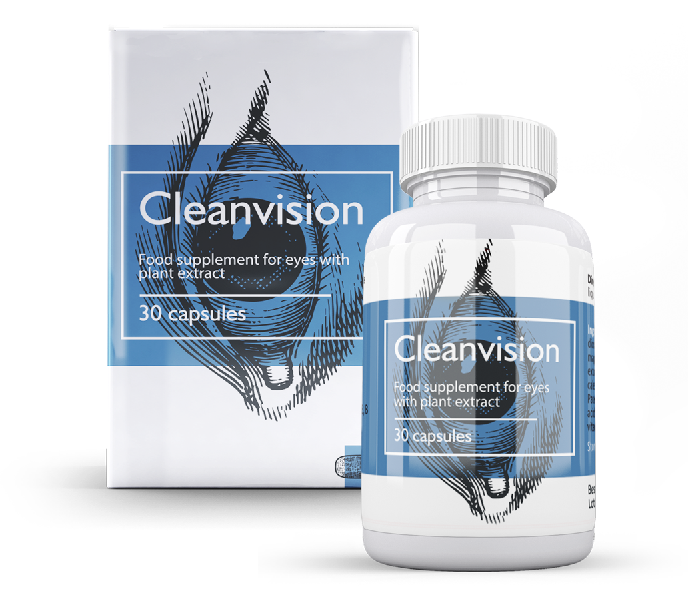

Vier Möglichkeiten, um das Sehvermögen bei Kindern zu verbessern
100% Sehvermögen wiederherstellen
Das Problem mit dem Sehvermögen ist heute zu einem der relevantesten Probleme für Menschen jeden Alters geworden. Ist es möglich die Sehkraft wiederherzustellen und sich für immer von der Brille zu verabschieden? Stimmt es, dass man nach einer Augenoperation erblinden kann? Das ist alles wahr. Lasst uns heute herausfinden, wie man die Sehkraft ohne irreversible Konsequenzen wiederherstellen kann.

Gutes Sehvermögen ist sehr wichtig
Augen — ein Körperorgan, das ebenfalls Pflege braucht. Wenn man sich um die Augen nicht kümmert, wird sich die Situation mit der Zeit nur verschlechtern. Die Sehkraft wird noch stärker sinken und es können sich weitere Augenkrankheiten entwickelt.
Wenn Sie Kontaktlinsen oder Brillen verwenden, wird sich die Situation mit der Zeit zwangsläufig verschlechtern. Der Grund dafür ist eine Schwächung der Augenmuskulatur. Das Tragen einer Brille oder anderer Hilfsmittel entspannt geschwächte Muskeln noch mehr.
Sehkraft nimmt ab, die Brillendicke nimmt zu und das von Jahr zu Jahr, wenn man nicht auf eie Behandlung zurückgreift.

Wie kann man das Sehvermögen wiederherstellen
Lassen Sie uns unter den vorhanden Möglichkeiten zur Wiederherstellung des Sehvermögens diejenigen anschauen, die ein 100% Ergebnis garantieren. Es gibt nur zwei davon - Laserkorrektur und die Einnahme entsprechender Medikamente.
Die Laserkorrektur ist eine schnelle, in 80 von 100 Fällen effektive, aber teure und nicht immer sichere Methode.
Leider geben selbst erfahrene Chirurgen keine absolute Garantie dafür, dass Sie Ihr Sehvermögen nach der Operation wiedererlangen und es völlig verlieren.
Die Qualität und Nutzungsdauer der Laserausrüstung, die Erfahrung des Arztes, eine ungenaue Diagnose und sogar ein kleines Merkmal des Körpers können das Ergebnis der Operation nachteilig beeinflussen.


Die Einnahme von Medikamenten ist eine längere und absolut sichere Methode, um das Sehvermögen und den Tonus der Augen wiederherzustellen. Das hängt ganz von ihrer jetzigen Sehstärke ab.
Heute gibt es in Europa nur ein Medikament, das klinisch getestet wurde und sich in der Praxis als effektiv erwiesen hat — CleanVision.
Es enthält sehr viele tonisierende Stoffe pflanzlicher Herkunft, die alle darauf abzielen Augenkrankheiten zu beseitigen und ein klares Sehvermögen wiederherzustellen.

Im Laufe des Jahres hat das Medikament mehr als 100.000 Menschen ermöglicht, Brillen und Kontaktlinsen dauerhaft aufzugeben.
Seine Entwicklung dauerte mehr als 10 Jahre. Weitere 4 Jahre führten Wissenschaftler klinische Experimente durch.
Die enorme Wirksamkeit des Arzneimittels beruht auf einer einzigartigen Zusammensetzung, die Extrakte aus Rauwolfia, Shiksha, Seetrauben und Haifett enthält.
Eine wichtige Rolle bei der Herstellung von Kapseln spielte die Methode der Kaltwasserextraktion, mit der die biochemische Zusammensetzung der Vitamine vollständig erhalten werden konnte.
Die Wirkstoffe des Arzneimittels können den Vitaminspiegel, der für das Sehvermögen verantwortlich ist, in nur Wochen auf ein gesundes Niveau gebracht werden.
In dieser Zeit wird das Gleichgewicht der für die Sehschärfe verantwortlichen Spurenelemente ausgeglichen.

Wo kann man CleanVision erwerben
Der Hersteller des Arzneimittels weigerte sich absichtlich, CleanVision über Apothekenketten zu verkaufen, um Produktfälschungen zu verhindern. CleanVision kann ausschließlich auf der offiziellen Webseite des Herstellers erworben werden, wo CleanVision bis zum 20.08.2020 mit einem 50% Rabatt verkauft wird.
Wenn Sie CleanVision in der Apotheke sehen werden, benachrichtigen Sie bitte die Telefon-Hotline auf der Webseite des Herstellers. Passen Sie auf Ihr Sehvermögen auf.
Auf die offizielle Webseite übergehen
Oh jee…. Habe es vor einigen Tagen in der Apotheke gesehen…
Das ist eine Fälschung. Teilen Sie auf der Webseite Adresse der Apotheke mit. Habe es mir auch gekauft und nach einem Kurs überhaupt keine Wirkung verspürt. Habe anschließend die Hotline angerufen und mich beschwert. Dann habe ich mir ein Original Mittel bestellt und sofort einen Unterschied festgestellt. Das Original CleanVision hat mein Sehvermögen vollständig wiederhergestellt!
Bei mir hat man eine Netzhautablösung diagnostiziert. Ich hatte solche Angst. Ärzte haben mir als Erstes natürlich eine OP vorgeschlagen. Ich lehnte es aber ab. Habe einen Kurs mit CleanVision abgeschlossen und meine Sehkraft hat sich wiederhergestellt.
Funktioniert das wirklich?
Ich und viele meiner Bekannten haben CleanVision eingenommen. Ich kann 100% bestätigen, dass es funktioniert.
Nehme CleanVision schon eine Woche lang ein und das Sehvermögen hat sich jetzt schon bereits verbessert!
Ein ziemlich aktueller Artikel, schließlich arbeiten derzeit viele am Computer. Das Sehvermögen muss geschützt werden.
Möchte auch eine Bewertung abgeben. Ich machte mir um meine altersbedingte Weitsichtigkeit Sorgen. Es gab sogar einen Verdacht auf die Entwicklung auf die Katarakt. Die Angst vor einer OP kann ich einfach nicht überwinden, da ich bereits viele negative Bewertungen darüber gehört habe. Das Medikament hat mir geholfen das Sehvermögen deutlich zu verbessern und die Entwicklung einer Katarakt loszuwerden.
Ich persönlich kenne viele Menschen, deren Augenoperation nicht besonders positiv verlaufen ist. Früher habe ich auch für eine Laserkorrektur gespart, doch dann habe ich beschlossen dieses Risiko lieber nicht einzugehen… Habe mir jetzt CleanVision bestellt, mal schauen, vielleicht hilft es ja.
Wird auf jeden Fall helfen, keine Sorge. Befolgen Sie einfach die Anweisungen (Sie werden bei der Bestellung beraten). Ich bin ein lebendiges Beispiel dafür, dass man das Sehvermögen ohne Operation wiederherstellen kann! Habe jetzt ein klares Bild und brauche überhaupt nicht mehr die Augen zusammen zu kneifen. Benutze sogar nicht mehr meine Brille!